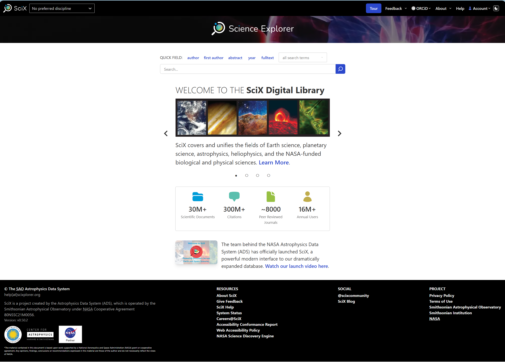
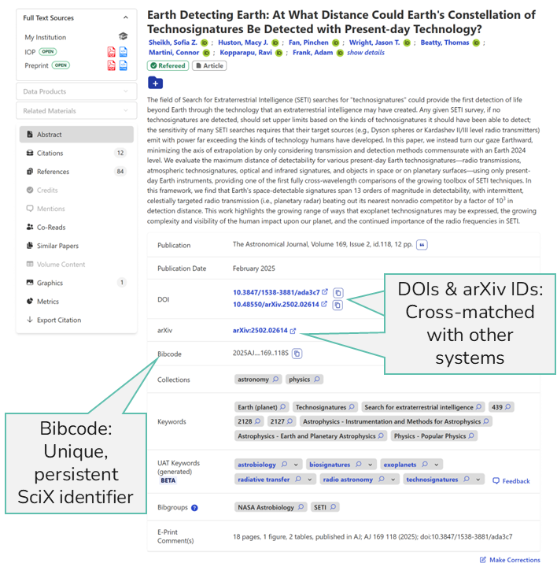
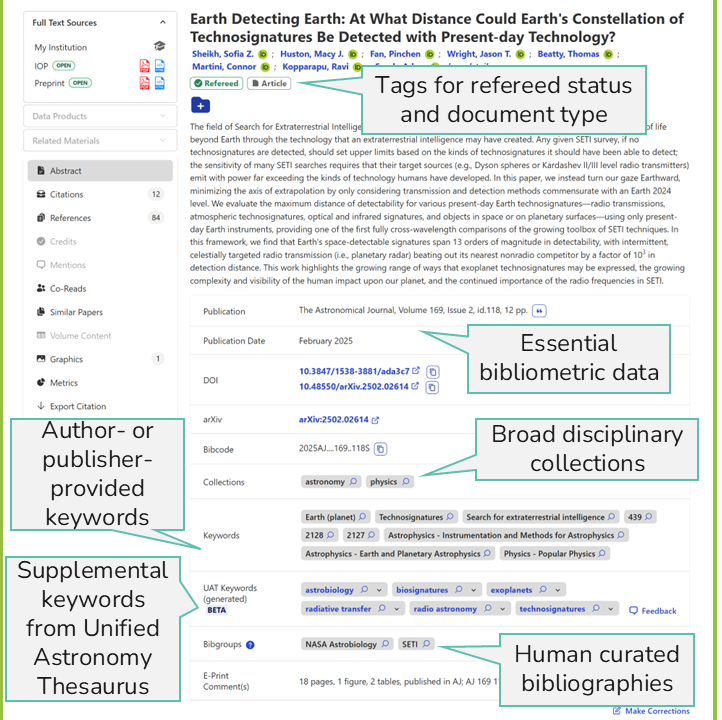
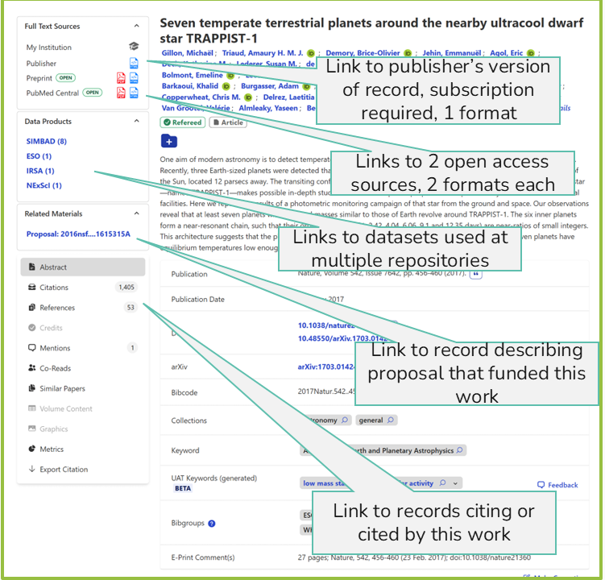
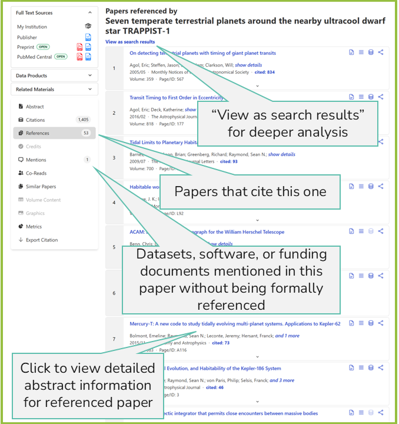

Intro to SciX and FAIR principles
Last updated on 2026-09-25 | Edit this page
Overview
Questions
- What is Open Science?
- What is FAIR?
- What do open science and FAIR mean to me?
Objectives
- Define Open Science.
- Define FAIR principles and explain what each component (Findable, Accessible, Interoperable, and Reusable) means in the context of scientific data.
- Explain how SciX supports making research artifacts Findable and Accessible
- Identify your role with respect to open science and FAIR practices at your institution
Open Science
Open science has become a buzz word today. We are all supposed to be in favor of open science.
Define Open Science
What comes to mind when you hear “open science”? How would you define open science?
Discuss with a friend. Note any areas of disagreement or any difficulties in defining the concept.
NASA proposes that:
“Open science is a collaborative culture enabled by technology that empowers the open sharing of data, information, and knowledge within the scientific community and the wider public to accelerate scientific research and understanding.” – NASA Open Science
Furthermore, the NASA Open Science site states:
- “Data, tools, software, documentation, and publications should be available to all (FAIR)”
- “Scientific processes and results should be open such that they are reproducible by members of the community”
- “Processes and participants should welcome participation and collaboration by other researchers and organizations”
NASA also offers online training. FAIR here and in this lesson stands for Findable, Accessible, Interoperable, and Reusable.
UNESCO has a similar definition.
“Open science is a set of principles and practices that aim to make scientific research from all fields accessible to everyone for the benefits of scientists and society as a whole. Open science is about making sure not only that scientific knowledge is accessible but also that the production of that knowledge itself is inclusive, equitable and sustainable.”
Furthermore the introduction to UNESCO’s recommendations for open science states:
“Open science: - increases scientific collaborations and sharing of information for the benefits of science and society; - makes multilingual scientific knowledge openly available, accessible and reusable for everyone; and - opens the processes of scientific knowledge creation, evaluation and communication to societal actors beyond the traditional scientific community.”
Open Science in the Real World
Identify an open science practice that does or could benefit your community and the associated benefit(s).
Identify either one unintended consequence of open science practices in your community or one aspect of open science practice that makes members of your community uncomfortable.
Discuss your experiences with a friend. Brainstorm solutions to the unintended consequences or the areas of reluctance.
The Science Explorer (SciX) is a NASA-funded digital library that is designed to promote open science practices and support research broadly in the science fields in which NASA is interested.
FAIR Principles
The NASA definition calls for FAIR “data, tools, software, documentation, and publications.” Originally defined in a highly technical manner for data, we now apply FAIR to most research artifacts.
Define FAIR
What comes to mind when you hear “FAIR”? How would you identify or measure whether an item was FAIR?
Discuss with a friend. Note any areas of disagreement or any difficulties in defining the concept.
Again, FAIR stands for Findable, Accessible, Interoperable, and Reusable.
Scientific credibility is built on transparency, which includes reproducibility. For one group of scientists to reproduce the results of another, those results must be findable and accessible. Of course, findable and accessible does not automatically equal reproducible but they are the first steps.
Traditionally, data supporting scientific research have been difficult to find in many fields. Papers often describe data collection and methods, but rarely include the actual data alongside the manuscript. As articles moved online, publishers were still not typically equipped to store and distribute datasets.
In response, standards were needed to guide data infrastructure. Consequently, participants at a 2014 Lorentz Center workshop developed the FAIR Principles for Scientific Data, which were first published by Wilkinson et al. in 2016 (DOI: 10.1038/sdata.2016.18 SciX bibcode: 2016NatSD…360018W/abstract). Each term has been expanded into guiding principles for developing resource platforms like SciX.
Findable Principles
The focus is on making data easy to locate by both humans and computers. This is achieved by creating machine-readable metadata that is essential for automated discovery:
- F1: Data and metadata are assigned a globally unique and persistent identifier.
- F2: Data are described with rich metadata (as defined further in R1).
- F3: Metadata clearly and explicitly include the identifier of the data they describe.
- F4: Data and metadata are registered or indexed in a searchable resource.
As fundamentally an indexing service, the data and metadata SciX provides are highly searchable. (F4)

SciX assigns each item a unique, persistent identifier, a bibcode that not only retrieves the article but also connects related papers via citations. When data, software, or other materials are available, they are either linked as external resources or indexed with their own identifiers internally. For interoperability, SciX also retains and displays the unique identifiers that other systems have assigned the same work. (F1)

SciX enriches the records it maintains with metadata from multiple sources, including information it develops. For instance, to make papers more findable, SciX is testing assigning keywords from the Unified Astronomy Thesaurus (UAT) to all papers in its astronomy collection. Doing so provides a consistent set of keywords across time and journals. (F2)

Accessible Principles
These principles help users understand how to retrieve data:
-
A1: Data and metadata are retrievable by their
identifier using a standardised communications protocol.
- A1.1: The protocol is open, free, and universally implementable.
- A1.2: The protocol supports authentication and authorisation, where necessary.
- A2: Metadata remain accessible even when the data are no longer available.
SciX provides a free API for standardized, programmatic retrieval of records. API users, however, must register for a token. (A1)
Applying accessibly to papers and research artifacts more broadly, SciX always links to the publisher’s version of record, even if it has a paywall. It also matches the available open access versions providing the user with multiple options. In addition, it links to data, software, and proposals to help the user understand how the reported results were achieved, reproduce them or reuse them as appropriate.

Interoperable Principles
Data often needs to be integrated with other data, used in workflows, or transformed for processing:
- I1: Data and metadata use a formal, accessible, shared, and broadly applicable language for knowledge representation.
- I2: Data and metadata use vocabularies that follow FAIR principles.
- I3: Data and metadata include qualified references to other data and metadata.
SciX uses the UAT as its preferred vocabulary for describing all research artifacts in the space sciences in part because of its community acceptance and in part because the UAT is itself a FAIR vocabulary. (I2)
When an article cites supporting references, SciX includes the citation information as part of the metadata. SciX maintains cross-references to multiple other systems. (I3)

Reusable Principles
The goal is to ensure data can be reused in various contexts:
-
R1: Data and metadata are richly described with a
variety of accurate and relevant attributes.
- R1.1: Data and metadata are released with a clear and accessible data usage license.
- R1.2: Data and metadata are associated with detailed provenance.
- R1.3: Data and metadata meet domain-relevant community standards.
SciX follows established publication and community standards and associates metadata with its provenance to ensure that data and other research artifacts are reusable in the appropriate context. (R1)
When SciX is successful in connecting researchers with existing datasets and software that is relevant to their projects, it is encouraging the re-use of scientific assets, which increases the return on investment for funders and increases the citations and recognition of the initial work.
Although SciX exemplifies all four FAIR principles, its primary focus is on being a discovery platform–making data Findable.
We have spent some time defining both open science and FAIR. How do they relate?
Open Science vs. FAIR
Are open science and FAIR the same? Is FAIR sufficient for open science? Is FAIR necessary for open science?
Discuss with a friend.
As part of its open science practice, SciX commits to:
- developing open source code
- releasing open source models
- publishing its work open access
Reflection and Discussion
- How does SciX make research more discoverable?
- In what ways do open science and FAIR principles benefit your community and society?
- Do you think investing in open science or FAIR best practices is worthwhile for your program?
- What do you see as your role in the growing open science ecosystem?
Please share your thoughts with a friend
Bonus Challenge
If you have not already taken NASA Open Science Essentials or NASA Open Science 101, browse the static version for some additional thought-provoking topics. You could also take the online version, but it is not always offered.
- Open science is a collaborative culture that shares research artifacts and knowledge to accelerate scientific knowledge development.
- The FAIR principles provide a framework for making scientific artifacts, especially data, more discoverable and usable.
- SciX makes data Findable by assigning unique, persistent identifiers and indexing rich metadata.
- SciX ensures Accessibility through standardized retrieval protocols and a robust API.